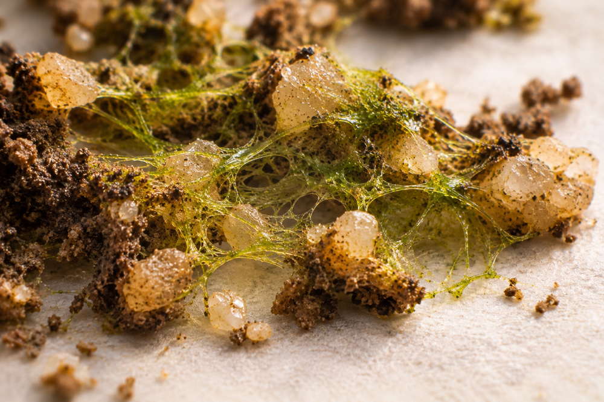

Home > Chronicles of a biblio-naturalist > Biomimesis in Action (11)
Biomimesis in Action (11)
The Bacteria That Hold the Desert Together
Biological soil crusts and micro-stabilization
The Ground That Looks Empty
In the deserts of the southwestern United States, the spaces between shrubs and grasses are not necessarily bare. A dark, uneven surface may cover the exposed ground, forming tiny ridges, patches, and irregular patterns. Elsewhere, the same surface appears almost indistinguishable from ordinary soil. Beneath that modest appearance lies a living community that helps prevent the desert from being carried away.
These surfaces are called biological soil crusts, or biocrusts. They are communities of cyanobacteria, other bacteria, algae, fungi, lichens, and mosses inhabiting the uppermost millimeters of soil. Their composition varies across environments, and some crusts are much more conspicuous than others. What unites them is the intimate association between living organisms and soil particles, through which the surface acquires properties that loose mineral material would not possess on its own (Garcia-Pichel 2023).
Biocrusts are particularly important in drylands, where plant cover is often discontinuous and exposed soil faces erosion by wind and water. They contribute to soil stability, influence nutrient cycling, and affect the movement of water through the surface. In some landscapes, they constitute a substantial proportion of the living ground cover.
Their most remarkable contribution begins at a scale almost invisible to the observer. Soil particles that might otherwise move separately become connected through the activity of microscopic organisms. The desert's resistance to erosion depends partly on relationships established within a layer that can be broken by a single footstep.
Threads Between Grains of Sand
One of the best-studied organisms involved in this process is Microcoleus vaginatus, a filamentous cyanobacterium widely distributed in dryland soils. It forms chains of cells surrounded by extracellular sheaths and can move through the narrow spaces between mineral particles. As the filaments spread, they physically connect grains of soil, while substances produced by the organisms help bind those particles into more stable aggregates.
The result is not a rigid protective covering applied from above. The organisms develop within the surface itself, gradually changing its physical properties. Their filaments and secretions create connections that increase cohesion, making particles more resistant to separation and transport.
The effect has been measured experimentally. Karimi, Tahmourespour, and Hoodaji (2024) inoculated sandy soil with Microcoleus vaginatus and examined its properties over ninety days. In wind-tunnel tests, treated soil experienced dramatically less erosion than untreated soil. At a wind speed of 50 kilometers per hour, measured soil loss fell from 55.7 to 0.3 kilograms per square meter. The experiment involved a particular strain under controlled conditions, but it demonstrated how microbial growth can alter the mechanical behavior of soil.
Biocrust organisms also contribute to processes beyond physical stabilization. Photosynthetic members introduce carbon into the system, while certain cyanobacteria and lichens participate in nitrogen fixation. Different species perform different functions, and not every crust contains the same biological capacities. What appears to be a single surface is consequently a community whose combined activities modify the conditions under which other life can persist.
What a Footstep Can Destroy
Biocrusts create an unusual contrast between ecological importance and physical vulnerability. A developed crust may survive prolonged dry periods, resuming biological activity when moisture becomes available. Yet trampling, vehicle movement, or other mechanical disturbances can break the surface and disrupt the relationships that give it stability.
The consequences extend beyond damage to the organisms themselves. Once soil particles become more easily detached, wind and runoff can remove material from the disturbed area. The resulting loss of fine particles, nutrients, and favorable microsites may complicate subsequent recolonization. Recovery depends on climate, organisms, and the extent and severity of disturbance.
Research on the Colorado Plateau illustrates that variability. Jech, Havrilla, and Barger (2023) examined the recovery of experimentally disturbed biocrusts and found that soil stability could recover relatively quickly in small disturbed patches. The restoration of the complete biological community, however, is a different matter and may take considerably longer. A surface that has regained some resistance to erosion has not necessarily recovered its former composition.
The crust performs an infrastructural function without possessing the durability normally associated with infrastructure. Its protective capacity depends on a living arrangement that can be disrupted far more quickly than it develops.
The smallness of the structure does not indicate the smallness of its contribution.
The First Layer of an Archive
Knowledge systems operating under precarious conditions often depend on equally inconspicuous forms of stabilization. A collection may survive in boxes, private houses, temporary storerooms, or computers belonging to different people, without the resources necessary to establish a permanent repository. Its immediate vulnerability may not be physical destruction, but the gradual separation of materials from the information that makes them intelligible.
Consider a rural community attempting to document its local history. Families hold photographs, former teachers preserve school registers, and several residents retain recordings or handwritten accounts. There is no permanent archive, and establishing one may require resources that are not currently available. Meanwhile, people move, equipment fails, and older custodians become unable to explain the materials in their possession.
The project could begin by stabilizing relationships rather than immediately concentrating everything in one place. A shared inventory might identify existing groups of materials and their custodians. Simple descriptive records could preserve provenance, dates, relationships, uncertainties, and access conditions. Transfers could be documented whenever they occur, even if the materials remain outside any formal institution.
These modest arrangements would not constitute a complete archival infrastructure. Their purpose would be narrower: preventing essential relationships from being lost while the future of the collection remains uncertain.
The biocrust comparison concerns precisely this function. Small connections can alter the vulnerability of a larger system before that system possesses the structures normally expected to protect it.
Stabilization Without Immobilization
Such an approach requires distinguishing between protecting relationships and preventing change. Biological crusts resist the movement of soil particles under erosive forces. Archival materials, by contrast, may need to move between custodians, locations, and technical systems. Their movement can be necessary for preservation, access, or the exercise of legitimate authority.
The relevant question is what must remain connected during those movements. An identifier should continue pointing to the correct object after a transfer. Provenance information should remain available when a collection changes custody. Restrictions and permissions should accompany the materials they govern. A revised description should not necessarily erase the evidence that explains an earlier interpretation.
Not every relationship should be documented or circulated indiscriminately. Certain knowledge may be intentionally restricted, and making connections more visible can expose people or communities to risks. Stabilization must therefore operate within decisions about authority, access, and responsibility rather than treating every possible connection as something that should be permanently recorded.
There is also a practical limit. Small procedures cannot compensate indefinitely for inadequate funding, exhausted custodians, insecure storage, or the absence of institutional accountability. An informal inventory may protect valuable context, but it cannot replace the conditions required for long-term preservation.
Biocrusts do not offer an argument for maintaining knowledge systems through minimal resources forever. Their ecological significance lies in showing how elementary connections can reduce vulnerability within an environment that remains exposed to disturbance.
What Holds the Surface Together
The desert is not stabilized by biocrusts alone. Vegetation, soil texture, topography, rainfall, and numerous other processes influence erosion and recovery. Nor are biocrusts invulnerable: the loss of a thin living layer can remove forms of protection that were difficult to perceive while they remained intact.
For fragile knowledge systems, the useful observation concerns the scale at which continuity can begin. A collection does not have to possess a permanent building or comprehensive digital repository before meaningful preservation work becomes possible. Maintaining identifiers, documenting transfers, recording responsibilities, and protecting contextual relationships can reduce certain risks while larger institutional arrangements remain unresolved.
These small measures are easy to overlook because their achievements often consist of losses that never occur. A document retains its provenance. A recording remains connected to its history. A transfer does not sever the relationship between materials and their custodians. Nothing spectacular happens, but something essential remains available for the future.
In the desert, the living crust is easily mistaken for the ground itself. Its importance becomes more apparent when the wind begins removing what it once held together.
Bibliography
- Belnap, Jayne. 2001. Biological Soil Crusts: Webs of Life in the Desert. U.S. Geological Survey Fact Sheet 065-01.
- Garcia-Pichel, Ferran. 2023. "The Microbiology of Biological Soil Crusts." Annual Review of Microbiology 77: 149–171.
- Jech, Sierra D., Caroline A. Havrilla, and Nichole N. Barger. 2023. "The Influence of Disturbance Scale on the Natural Recovery of Biological Soil Crusts on the Colorado Plateau." Frontiers in Microbiology 14: 1176760.
- Karimi, Amir, Arezoo Tahmourespour, and Mehran Hoodaji. 2024. "Cyanobacterial Biocrust Alters Soil Physical Properties Reducing Soil Erosion and Aerosol Production." Brazilian Journal of Microbiology 55: 2453–2461.